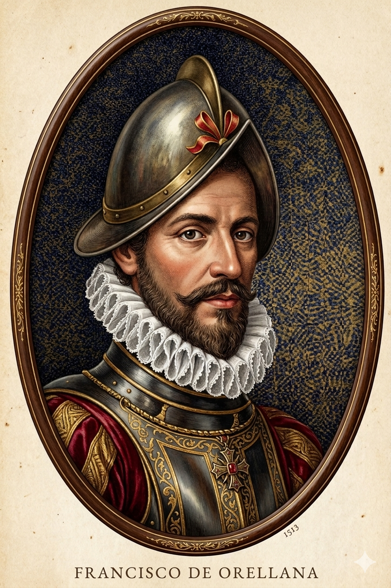

פרנסיסקו דה אורייאנה

לחץ על התמונה להגדלה
אנא הוסף קרדיט ויקימדיה (CC BY-SA 4.0) לאחר מציאת התמונה
מקור ומשמעות השם המלא (אטימולוגיה)
שם פרטי: פרנסיסקו (Francisco)
השם "פרנסיסקו" מגיע מהשם הלטיני המאוחר Franciscus, שפירושו המקורי היה "איש פרנקי" (משבטי הפרנקים הגרמאניים) או בהשאלה "איש חופשי".
הקשר היסטורי ותרבותי: זה היה אחד השמות הנפוצים ביותר בספרד של המאה ה-16, והוא מזוהה לעד עם עידן התגליות בזכות העובדה ששני קונקיסטאדורים בני אותה העיר (אורייאנה ופיסארו) נשאו את השם הזה, אף על פי שמשמעותו החופשית עמדה בסתירה מוחלטת לאופן בו הם שיעבדו את העמים הילידיים של האמריקות.
שם משפחה: דה אורייאנה (de Orellana)
זהו שם משפחה טופונימי (הנגזר ממקום גיאוגרפי). הקידומת "דה" (de) פירושה "מ-" או "של", ומציינת מוצא גיאוגרפי ולעתים קרובות גם ייחוס אצילי.
פירוש ובלשנות: השם "אורייאנה" מעיד על כך שמשפחתו או אבותיו הגיעו מהעיירה Orellana la Vieja (אורייאנה הישנה) הממוקמת בחבל אקסטרמדורה בספרד. מבחינה אטימולוגית שורשית, השם של העיירה מבוסס על השם הלטיני הרומי Aurelius (אורליוס), שמשמעותו "זהוב" (מ-Aurum = זהב). באופן אירוני ומדהים, האיש ששמו משמעותו "מן הזהוב", נשלח למעמקי הג'ונגל לחפש את "אל דוראדו" (האיש המוזהב), רק כדי למצוא במקום זאת נהר עצום.
ילדות, רשת קשרים ואיבוד העין
פרנסיסקו דה אורייאנה נולד בשנת 1511 בעיר טרוחיו (Trujillo) שבחבל אקסטרמדורה, ספרד – אותו אזור עני, צחיח וקשוח שממנו יצאו גדולי הקונקיסטאדורים.
קשר משפחתי לכיבוש פרו: אורייאנה היה קרוב משפחה (כנראה בן דוד מדרגה שנייה) של פרנסיסקו פיסארו, כובש אימפריות האינקה, וידיד קרוב של אחיו למחצה, גונסאלו פיסארו. עובדה זו הכתיבה את גורלו.
הגירה בגיל צעיר והקרבת הגוף: אורייאנה לא חיכה לבגרות. הוא הפליג לעולם החדש כנער (בסביבות שנת 1527), ושירת כדיכוי מרידות בניקרגואה. מאוחר יותר הצטרף לכוחותיו של פיסארו בפרו. במהלך אחד הקרבות העקובים מדם נגד האינקה, הוא נפצע קשה ואיבד אחת מעיניו. הפציעה לא עצרה אותו, והוא נודע כלוחם עשוי ללא חת שניחן ביכולת מדהימה ללמוד במהירות את שפות הילידים (תכונה שהצילה את חייו במסעו הגדול).
אידאולוגיה, מניעים והאובססיה לזהב וקינמון
המניעים של אורייאנה ויציאתו למסע לא נבעו מחקר מדעי טהור או מניסיון למפות את העולם, אלא משתי אגדות שהטריפו את דעתם של הספרדים בפרו של שנות ה-40 של המאה ה-16:
הכנות למסע: נסיבות, אינטרסים מלכותיים ובחירת המנהיג
היציאה אל הלא-נודע של אגן האמזונס לא התרחשה בחלל ריק. היא הייתה תולדה של שאפתנות פוליטית, חמדנות כלכלית, ורשת קשרים אישיים.
ראשית, האיום הפורטוגלי: על פי חוזה טורדסיאס, חלקה המזרחי של דרום אמריקה (ברזיל) היה שייך לפורטוגל. המלך הספרדי חשש שהפורטוגלים יתקדמו פנימה אל תוך היבשת דרך האמזונס. שליחת משלחת מלכותית נועדה לבסס "עובדות בשטח" ולתבוע בעלות על הנהר האדיר.
שנית, אינטרס כלכלי וצבאי: המלך קיווה שמסלול האמזונס ישמש "כביש מהיר" וישיר להעברת זהב וכסף מהרי האנדים (פרו) אל האוקיינוס האטלנטי ומשם לספרד, מבלי להזדקק למסעות יבשתיים ארוכים או להפלגה דרך מצר מגלן המסוכן.
בשלב הראשון (סגנו של פיסארו): אורייאנה לא נבחר על ידי המלך, אלא על ידי גונסאלו פיסארו. פיסארו בחר בו כי אורייאנה היה קרוב משפחה נאמן, איש צבא מנוסה, וחשוב מכל – היה אדם עשיר מאוד. אורייאנה השקיע כ-40,000 פסו מזהב מהונו האישי (כסף שעשה כמושל פוארטו ויאחו בגואיאקיל) כדי לממן חלק ניכר מהמשלחת. בתמורה לתמיכתו הכלכלית והצבאית, מונה ללוטננט-גנרל (סגנו של פיסארו).
בשלב השני (המינוי המלכותי): לאחר שאורייאנה נפרד מפיסארו (בשל חוסר היכולת לחתור חזרה נגד הזרם), צלח את האמזונס, וחזר לספרד (1543), הוא הואשם בבגידה על ידי משפחת פיסארו. אורייאנה הופיע בפני מועצת אינדיאס (הגוף המייעץ למלך), הגן על עצמו בכישרון, והוכיח כי פרידתו הייתה כורח הישרדותי ולא בגידה. המועצה והמלך התרשמו מגילוי הנהר האדיר. מאחר שאורייאנה היה האירופאי היחיד שהכיר את הנהר, ידע לתקשר עם הילידים, ושרטט מפות של האזור, המלך עצמו בחר בו. אורייאנה קיבל מהכתר את התואר הרשמי "אדלאנטדו" (Adelantado - מושל צבאי ואזרחי) ונשלח להוביל את המשלחת המלכותית השנייה כדי לכבוש וליישב את מחוז "אנדלוסיה החדשה" (אגן האמזונס).
המסע המדהים: מהרי האנדים לאוקיינוס האטלנטי (1541-1542)
המשלחת, שהחלה בחיפוש אחר תבלינים, הפכה לאחד מסיפורי ההישרדות והגילוי המטורפים והחשובים בהיסטוריה האנושית.
בניסיון נואש להשיג מזון, פיסארו הורה לאורייאנה לקחת סירה קטנה שנבנתה בג'ונגל (ה"סן פדרו"), ולרדת עם 50 איש (וביניהם הכומר והמתעד גספאר דה קרווחאל) לאורך נהר הנאפו (Napo River) כדי למצוא כפרים עם אוכל, ולהביאו בחזרה.
(גונסאלו פיסארו, שהמתין לשווא, ראה בכך בגידה וניצל בנס כשחזר ברגל לקיטו עם שרידי המשלחת).
האירוע המפורסם ביותר אירע ביוני 1542. קרווחאל כותב ביומנו שסירתם הותקפה על ידי שבט מוזר שהובל על ידי נשים לוחמות פראיות, שהיו גבוהות, חזקות, חמושות בחצים וקשתות, ולחמו באומץ לב. הספרדים, שניזונו מהמיתולוגיה היוונית העתיקה, האמינו שנתקלו ב"אמזונות" (Amazons). השם הזה תפס, וזהו מקור שמו של הנהר ויער הגשם כולו עד לימינו (על אף שחוקרים מודרניים סבורים שהם פשוט נלחמו בגברים אינדיאנים עם שיער ארוך שערכו טקסי לחימה משותפים יחד עם נשותיהם).
השפעות היסטוריות, גיאוגרפיות ואנתרופולוגיות
1. הגיאוגרפיה של היבשת מתגלה
אורייאנה חשף לראשונה מציאות שהייתה בלתי נתפסת עבור הגיאוגרפים האירופאים: יבשת אמריקה הדרומית רחבה באופן מדהים, ויש בה מערכת נהרות פנימית שחוצה את כולה מהרי האנדים ועד האוקיינוס האטלנטי. המסע שלו עשה דה-מיסטיפיקציה לג'ונגל, ושרטט לראשונה על המפה הגיאוגרפית את אגן האמזונס (Amazon Basin).
2. עדות אנתרופולוגית לקיומן של ערים ילידיות אדירות
במשך שנים רבות, יומניו של הכומר קרווחאל (שטען שראה כפרים באורך 20 קילומטרים ורשתות דרכים וחקלאות באמזונס) נחשבו להגזמה פרועה ולהמצאות שקריות. מדענים חשבו שהג'ונגל לא יכול לכלכל אוכלוסייה כה גדולה. אולם, בעשורים האחרונים של המאה ה-20 והמאה ה-21, מחקרים ארכיאולוגיים וגילוי "אדמה שחורה" (Terra Preta - אדמה מועשרת על ידי בני אדם) מוכיחים שאורייאנה דיבר אמת. באמזונס אכן שכנו תרבויות מתקדמות ועצומות שאוכלוסייתן מנתה מיליונים, אך הן הושמדו לחלוטין על ידי המחלות שהביאו אורייאנה ואנשיו, כך שכשחוקרים אחרים חזרו לשם מאה שנים מאוחר יותר, יער הגשם כבר בלע את הערים הללו בחזרה והסתיר אותן.
3. הסוף הטרגי של החוקר בעל העין האחת
כשחזר לספרד, אורייאנה זכה ליחס של גיבור (והואשם בבגידה על ידי פיסארו, אך זוכה). המלך העניק לו כתב זכויות ומינה אותו כמושל של מחוז חדש שנקרא "אנדלוסיה החדשה" (Nueva Andalucía) באזור האמזונס. ב-1545 הוא חזר לאמזונס עם משלחת גדולה במטרה ליישב את האזור, אך המסע היה אסון לוגיסטי. האוניות טבעו, אנשיו גססו, ובנובמבר 1546, פרנסיסקו דה אורייאנה עצמו מת, קרוב לוודאי כתוצאה ממחלה ואולי בעקבות התקפת חצים מורעלים מצד הילידים, ונקבר באדמת יער הגשם אותו הוא עצמו גילה.
מקורות וביבליוגרפיה (אימות מחקר)
- "The Discovery of the Amazon" (גספאר דה קרווחאל): היומן המקורי שנכתב על ידי הכומר גספאר דה קרווחאל (Gaspar de Carvajal) ששרד את המסע יחד עם אורייאנה. זהו המסמך העיקרי המספר את עלילות "לוחמות האמזונס" ואת מיתוס העיר אל דוראדו.
- River of Darkness (Buddy Levy): ספר היסטורי מודרני מקיף (2011) המגולל את פרטי המסע הראשון לאורך האמזונס, ובוחן במבט היסטורי-מדעי את המצבים האתניים והטופוגרפיים שאורייאנה התמודד איתם.
- מחקר היסטורי וארכיאולוגי: Hemming, John (1978). The Search for El Dorado. (לניתוח אידאולוגיית האקסטרציה הספרדית) וכן מחקרים עכשוויים אודות ה-Terra Preta, המאמתים את דיווחיו האנתרופולוגיים של אורייאנה על צפיפות האוכלוסין ביערות.